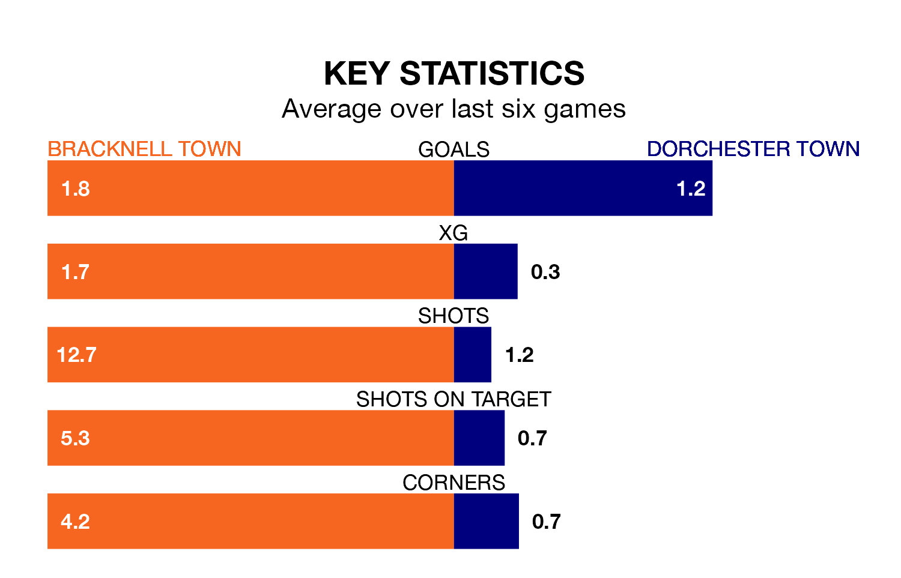

Bracknell Town host Dorchester Town on Saturday in the Southern League Premier South.
In their last league match, on February 10, Bracknell beat Merthyr Town 3-2 away.
Dorchester lost, 3-0 at home against Gosport Borough.
With 39 goals in 28 games so far this season, Dorchester are scoring at below the league average rate with 1.4 goals per game. And they are conceding more than average, letting in 55 goals at a rate of 2.0 per game.
Bracknell, meanwhile, are above average scorers, with 1.9 goals per game, compared to a league average of 1.7. They have conceded 1.7 goals per game.
Dorchester Town are 19th in the table after 28 games, of which they have won eight and drawn six, earning 30 points.
Bracknell Town are 13 places ahead of the visitors in sixth, with 14 wins and three draws putting them on 45 points.
In the last three years, Bracknell and Dorchester have played each other on three occasions. Bracknell won all of them.
Their last meeting was on November 14, when Bracknell won 2-1 away.
The home team are in mixed form in the Southern League Premier South, with three wins and three losses from their last six games.
With three wins and two draws over that period, Dorchester's form is slightly better – they have taken 11 points from 18, compared to Bracknell's nine.
Updated: 13:30 (UTC), 12/02/24